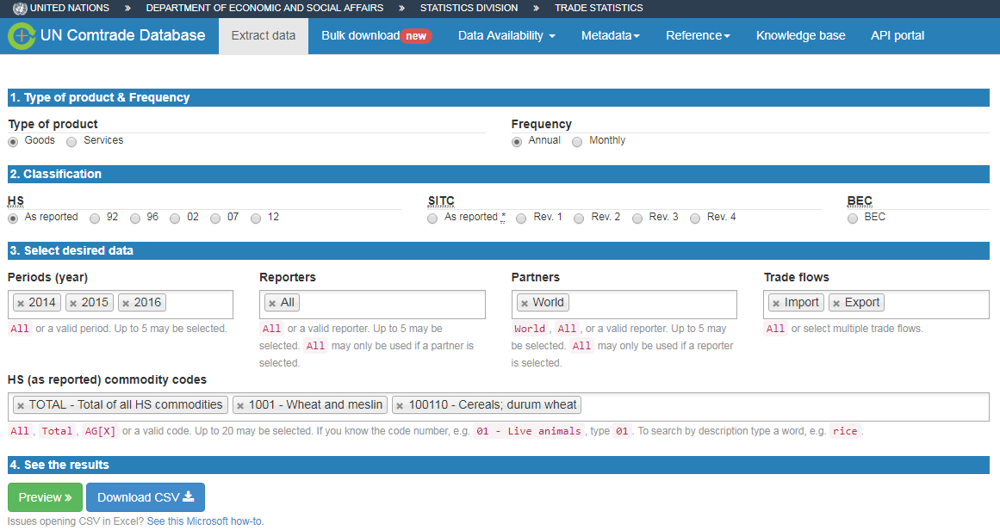
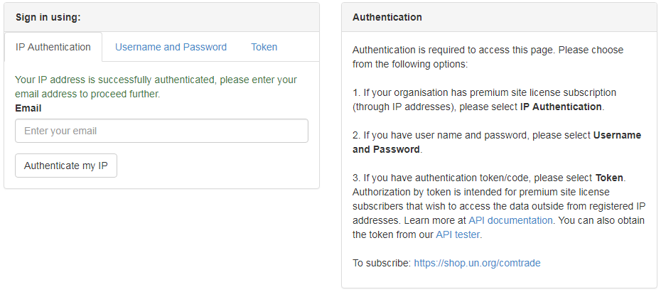
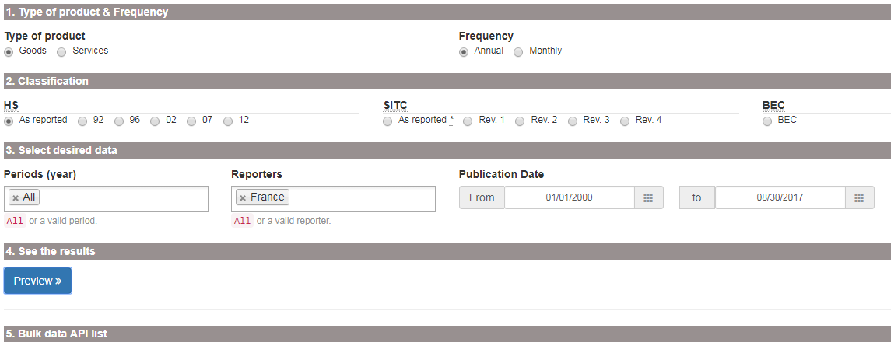
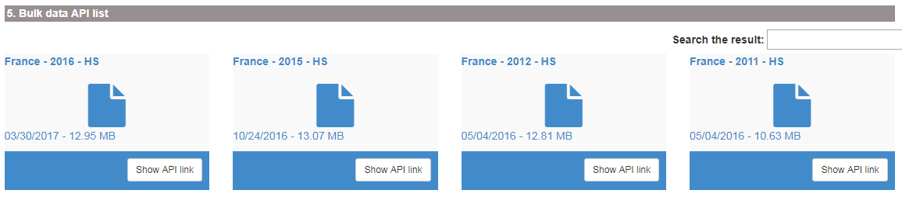
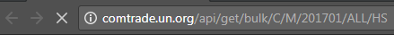

Comtrade is a UN based comprehensive trade data collection and dissemination platform maintained and owned by The United Nations Statistics Division (UNSD). From the FAO building, everyone has full access to all Comtrade services. All information is available on the Comtrade website https://comtrade.un.org/.
In Comtrade there are few main options of data access:
Regular download - manually insert a query in the browser and get a table in the browser or download a .csv file with selected data;
Bulk download - manually insert short query on a web page, or use the browser command line (address line in the browser) to pass arguments to the server. In return, user will download a zip archive with data that covers trade of selected country (or all countries) in one time period (year or month) and specified coding system (HS as reported, HS2007, HS2012, etc.). Bulk download has an option to download data of all reporters for one period/coding system in file;
Official and not official data visualization solutions.
To save time before starting analysis, it is always good to know data availability in Comtrade. There are two interfaces for data availability analysis:
New trade availability visualization tool https://comtrade.un.org/data/da, where it is possible to explore one country availability or download (clicking Download button) an extensive .csv file with information about all available data.
Old outdated interface for data availability per country, commodity, year and other parameters is available at https://comtrade.un.org/db/mr/daReportersResults.aspx.
It is also possible to access data availability for the Bulk download. This data is available at the address line call: http://comtrade.un.org/api//refs/da/view?parameters. More information here.
Source
Regular downloads is available here: https://comtrade.un.org/data/. This is a query based approach to load Comtrade data selecting a specific range of parameters. With the regular download is it possible to obtain a CSV file, which can be analyzes in excel, R, Stata and other tools.
How to access data
For an extensive overview, see the tutorial video below (https://www.youtube.com/watch?v=oflKZUj2BgE).
The most common query that will return data that we need in 90% of our analysis is the following:

Data response
Normally, data is returned in the long format with the variables describing main data dimensions selected above and variables with Trade quantities, Trade value, and units of measurement.
Comtrade bulk download is available at the web page https://comtrade.un.org/data/bulk.
There are two options how to access bulk data in Comtrade:
Source
Web based query for accessing Comtrade bulk data in the browser is available here: https://comtrade.un.org/data/bulk.
First time you need to access it from the FAO buildings in order to authorize your email. Insert your email in the “Enter your email” field and press “Authenticate my IP”. After that your email will be saved in the Comtrade database and you will be grated with the access to the bulk download interface (same address https://comtrade.un.org/data/bulk).

How to access data
In order to access Comtrade bulk data on the bulk data access page select required set of parameters. For example, to download bulk commodity statistics for France, select:

After clicking “Preview” yo will be returned with the list of all bulk data files available for your selection. Clicking on any of them will run the file, clicking on “Show API link” will provide you with the API data request command (see the next subsection) for returning a bulk data file. Be aware that any bulk data file could range in size from 1 to 500 megabyte.

Data response
Your browser will download one zip archive with data for a selected country (all countries), period and classification.
Attention! Data files could be very. In zipped format file size may range from 1 to 500 megabyte. Un extracted format, file size could be up to 9 gigabytes.
Source
If you do not want to click in the browser, you can use the API for accessing Comtrade data. Extensive explanation about the Comtrade API tools is available here https://comtrade.un.org/data/doc/api/bulk/.
How to access data
To access Comtrade bulk data with API, we need to construct a request, insert it to the browser command line and run it.
To request a bulk data file we need to use the specific format explained here. The main idea is to construct a request based on the template http://comtrade.un.org/api/get/bulk/{type}/{freq}/{ps}/{r}/{px}?{token=} specifying correct parameters:
type - trade type C - Commodities of S - Services;freq - frequency A - Annual or M - Monthly;ps - period coverage for annual data ps=YYYY - e.g. ps=2010, for monthly ps=YYYY or ps=YYYYMM;r - reporter area code - e.g. r=804 or r=All. Extensive list available here;px - classification, available values are: HS - Harmonized System (HS) as reported, H0-HS 1992, H1-HS 1996, H2-HS 2002, H3-HS 2007, H4-HS 2012 and others see;token - optional parameter for data from outside of the authorized network.For example, we want to request monthly data freq=M of commodities trade type=C for All reporters r=ALL for period January, 2017 ps=201701, in the HS as reporter classification px=HS. The request is http://comtrade.un.org/api/get/bulk/C/M/201701/ALL/HS. We insert this request to the browser adders line and download the file.

Data response
Your browser will download one zip archive with data for a selected country (all countries), period and classification.
Attention! Data files could be very. In zipped format file size may range from 1 to 500 megabyte. Un extracted format, file size could be up to 9 gigabytes.
UN Comtrade lists several visualization platforms on the page https://comtrade.un.org/labs/. Here, we will discuss some of them in more details.
Comtrade data explorer https://comtrade.un.org/labs/data-explorer/ (unfortunately was not working on 2017-08-31). A tool for visualization of the main trade flows between selected reporters and partners of the selected commodity. Here, you will find a .pdf guidelines on how to use Comtrade data-explorer.
Limitations:
BIS trade in goods tool is available at https://comtrade.un.org/labs/BIS-trade-in-goods/ it allow to visualize trade of a selected good from a selected reporter to all or selected partner.
Limitations:
Copyright © 2017 Eduard Bukin. All rights reserved.